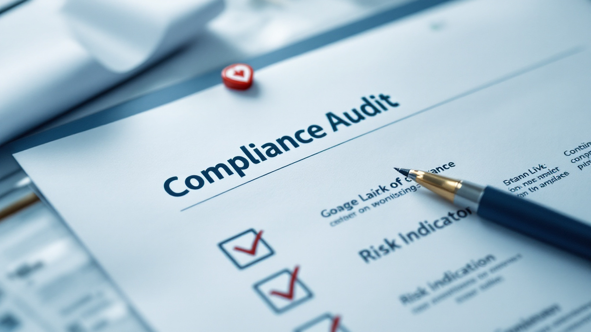

AI-powered compliance, audit, and risk management for Odoo 18
The Compliance, Audit & Risk Automation module provides a unified platform for managing audit engagements, compliance frameworks, enterprise risk registers, control testing, and policy lifecycle management. Designed for productivity teams that need structured governance with AI-assisted insights.
Each model includes dedicated AI fields — risk assessments, mitigation priorities, automation potential, and compliance gap analysis — enabling teams to leverage artificial intelligence for smarter governance decisions.